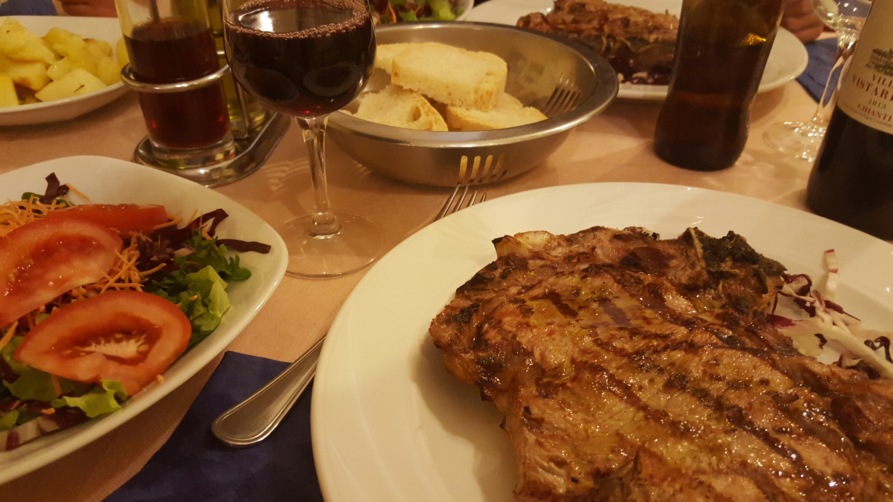

On August 26th, the largst fight of all time took place.
UFC double weight champion, Conor McGregor, fought undefeated World Master Overlord, Floyd Mayweather.
 @peterbtechnik.
@peterbtechnik.
Where do we start ? .... What happened, who won?
 @peterbtechnik.What Happened?
It was an incredible ten rounds of fighting. Tons of actions, Mcgregor did surgery on Mayweather early on. Had the old man scared on a couple of faints. Jabbed Floyd in the face a couple of times, and landed a very satisfying uppercut. Floyd swung viciously side to side with his arms covering his face, often falling into McGregors tender embrace, praying for a reset. Floyd returned on the fifth. His counter punches and swings got harder and angrier, and Conor tried to pull back to slow the pace. Mayweather doesnt operate like that in the late rounds, Mayweather sets the pace. Floyd Mayweather, and his champion, marathon runner, level fitness, slowly swam McGregor out into the deep end until he drowned. Mayweather TKO'd Conor in the 10th round. .
Who Won? Floyd won. But did he really...
This is a hard article to write because I have been a Floyd Mayweather fan for a very long time. It only makes sense. Every fight he's had in the past 5 years have been against Mexicans and Phillipinos. Who else would I support.
Who else would I support?.
This time he fought a real folk hero. He fought Conor Mcgregor. Conor is Mr. Fahrenheit. His punching is electric. His timing is venomous. He holds his mits up like he's literally the fighting Irishman that Notre Dame uses as a mascot.
@peterbtechnik.Why do I like McGregor ?
@peterbtechnik.Conor McGregor brought class to UFC. His fight against Nate Diaz is my primary example. Conor had Nates face looking like a used tampon. Conor knew the fight was done, he let up his attack, perhaps to allow Nate to retain some of his integrity. Its only because Nate Diaz is a dirty junkyard dog that he felt compelled to keep fighting.
Conor McGregor brought class to fighting. Like rappers bring fashion into Hip Hop, Conor did the same for UFC. Conor finnessed Gentlemans Quarterly. Conor finessed Gucci Mink. Style, intellect, traits that clearly belong to Conor.
Once More: Floyd won. But did he really...
@peterbtechnik.Only a hollow reminder of how manipulating the rules in almost any sport can provide the most effective results. Abandon your integrity kids. Floyd hid behind his mits with his head down so often, I think the referee touched McGregor more than Floyd actually did.
@peterbtechnik.Floyd got finessed early on. Theres no excuses for it. I don't believe the man when he says immediately in the press conference: "That was the game plan: stay back, let him get out his big shots.". Floyd you dissapoint me. You could've done everyone a big favor and fought this match stadning straight. You already made Conor completely compromise comfort zone when you made this boxing match. Then you proceed to manipulate every trick in your arsenal to win this fight like it was more of spar than something involving honor. Fighting should be about honor and integrity. Conor is chalk full of that shit.
@peterbtechnik.My fondest memories of the fight.
@peterbtechnik.Whats next ?
@peterbtechnik.Floyd goes into retirement. His legendary career will remain a landmark in fighting sports. Decidedly, Floyd Mayweather is a winner, but he's not a fighter.
I think its time to move on to a real fighter, Conor McGregor.
@peterbtechnik.Photographs by Peter Bangert.